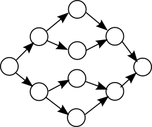

Please note: this article is part of the older "Objective-C era" on Cocoa with Love. I don't keep these articles up-to-date; please be wary of broken code or potentially out-of-date information. Read "A new era for Cocoa with Love" for more.
Breadth-first traversal of a graph of Objective-C objects
If you have a collection of interconnected objects in Objective-C, what is the best way to traverse them all in order from nearest to furthest? Are the NSMutableSet methods good for tracking already-visited nodes? How much overhead does an NSMutableArray FIFO queue impose relative to a depth-first search (which doesn't require a FIFO queue)? Does NSMutableArray perform better if objects are pushed onto the front, or the back? In this post, I present answers to these questions and more.
Graph theory
In programming, a graph is any collection of connected data objects.
If that information was new to you, then I suggest you read this Wikipedia page: Graph (computer science), then read every page to which it links, then for each of those pages, also read every page to which they link. Come back to this page once the irony is apparent.
The two common means of processing nodes in a graph are depth-first and breadth-first traversal. Breadth-first graph traversals are normally slightly harder to write than depth-first traversals because we have the added requirement of a maintaining a FIFO queue to handle the nodes to be processed.
When all the nodes in the graph are Objective-C objects and an NSMutableArray is used to maintain the FIFO queue, what is the fastest way to traverse? I tested a few different approaches to see which would work best.
The graph used for testing
All my tests were on graphs where each node of the graph was connected to two more nodes until the center layer of the graph, at which point pairs of nodes were subsequently connected to a single node until the graph converged back to a single node.
An example of this graph structure (shown horizontally so layers are aligned in columns) with two increasing layers and two decreasing layers is:
Since there are two increasing layers and two decreasing layers, I called this a "half-depth" of 2. I will refer to the size of all subsequent graphs by their "half-depth".
All nodes are objects of the following class:
@interface Node : NSObject
{
NSSet *linkedNodes;
}
@property (nonatomic, retain) NSSet *linkedNodes;
@endThese classes don't store any useful information but that's not the point of these tests: I'm testing traversal performance only.
Initial approach
The basic algorithm is:
- create a set to track already-visited nodes
- create an array to queue nodes-to-process
- for every node (in order) in the nodes-to-process array:
- get the set of nodes linked to the current node
- exclude nodes that we've already visited from the linked set
- add non-excluded, linked nodes to the nodes-to-process array
The first code I wrote implementing this algorithm was:
NSMutableSet *visitedNodes = [NSMutableSet setWithObject:startingNode];
NSMutableArray *queue = [NSMutableArray arrayWithObject:startingNode];
while ([queue count] > 0)
{
NSMutableSet *newNodes =
[[((Node *)[queue lastObject]).linkedNodes mutableCopy] autorelease];
[newNodes minusSet:visitedNodes];
[visitedNodes unionSet:newNodes];
[queue
replaceObjectsInRange:NSMakeRange(0, 0)
withObjectsFromArray:[newNodes allObjects]];
[queue removeLastObject];
}This code uses NSMutableSet's own set-operators to exclude already visited nodes. It also pushes new objects onto the front of the queue and pops each node for processing off the end.
So, how did this approach perform? In a word: terrible — and it's the fault of -[NSMutableSet minusSet:].
Lesson 1:
Only ever use[setOne minusSet:setTwo]ifsetOneis bigger thansetTwo. This method runs in O(n) time, where n is the size ofsetTwo. In the above code, wherevisitedNodescan be orders of magnitude bigger thannewNodesit is much faster to iterate overnewNodesand exclude nodes found invisitedNodesourselves. That way we run in O(m) time, where m is the size ofnewNodes(and is actually small and constant for this test case).
The method minusSet: really should iterate over the smaller set between the receiver and the parameter. However, since it doesn't we must avoid it.
Front-to-back or back-to-front
The next problem to address: is it faster to push objects onto the front of an NSMutableArray and pop them off the end, or to push them onto the end and pop them off the front?
The following is the push onto front:
while ([queue count] > 0)
{
NSSet *newNodes = ((Node *)[queue lastObject]).linkedNodes;
for (Node *newNode in newNodes)
{
if (![visitedNodes containsObject:newNode])
{
[visitedNodes addObject:newNode];
[queue insertObject:newNode atIndex:0];
}
}
[queue removeLastObject];
}This is the push onto back:
while ([queue count] > 0)
{
NSSet *newNodes = ((Node *)[queue objectAtIndex:0]).linkedNodes;
for (Node *newNode in newNodes)
{
if (![visitedNodes containsObject:newNode])
{
[visitedNodes addObject:newNode];
[queue addObject:newNode];
}
}
[queue removeObjectAtIndex:0];
}The result, testing over graph half-depths of 8, 12, 16 and 20 (from 766 to 3145726 nodes) is that push onto end (the second one) is consistently 5% faster.
Lesson 2:
An add to the end of anNSMutableArrayis the only operation that works quickly — most other operations are consistently slower. If the number of operations is equal, favor algorithms that add to the end of the array.
Other questions tested
Will local NSAutoreleasePools help small loops like this?
Wrapping the body of the above loops in an NSAutoreleasePool to release storage locally resulted in a 25% increase in time taken.
The inside of these loops don't autorelease any memory (NSMutableArray and NSMutableSet maintain their own memory manually) so the autorelease pool is wasted effort.
Is an NSOperationQueue for the FIFO queue faster?
Moving the content of the loop into an NSOperation object and pushing each operation into an NSOperationQueue to traverse the graph made the overall traversal approximately 100 times slower.
The extra work involved in creating each operation object, then having NSOperationQueue distribute the jobs over different CPUs (I have a 2 x PPC G5 CPU machine) and waiting for each thread to start and end is a lot of overhead.
Additionally, while NSOperationQueue is a FIFO queue, the jobs only run in-order if we set the maxConcurrentOperationCount to 1, so we're not really gaining anything from using the NSOperationQueue.
NSOperationQueue is intended for independent (threadable) operations of a non-trivial size. The inside of this loop doesn't meet that expectation.
How much overhead does the FIFO queue impose?
The only way to examine this is to run a depth-first search using a recursive algorithm.
void RecursivelyTraverse(Node *node)
{
NSSet *newNodes = node.linkedNodes;
for (Node *newNode in newNodes)
{
if (![recursiveSet containsObject:newNode])
{
[recursiveSet addObject:newNode];
RecursivelyTraverse(newNode);
}
}
}The result, over half-depths of 8, 12, 16 and 20 is that the recursive algorithm is consistently twice as fast.
Lesson 3:
UsingNSMutableArrayas a FIFO queue imposes a constant additional time per node. In this trivial test, the additional time amounted to half the computation for the node but if you have significant additional computations to perform per node, the overhead of the FIFO queue may be insignificant relative to the remainder of your algorithm.
Conclusion
You can download the test code I used: FIFOQueues.zip (46kB)
Even in such a simple algorithm, there are clearly some lessons to learn. The biggest surprise for me was that I couldn't trust minusSet: to work in the most efficient manner. I think I'll need to submit a bug for this to Apple.
NSMutableArrays are not symmetric front-to-back, although the difference is minor enough that it may won't always matter.
Tools like NSOperationQueue are there to help multi-threading (to an extent) but don't work well on tiny snippets of code like this. Small loops like this would vectorize better than parallelize (SSE or Altivec) — but you can't vectorize loops with Objective-C method invocations so that still isn't an option here.
Interprocess communication: snooping, intercepting and subverting
An Asteroids-style game in CoreAnimation, Part One.